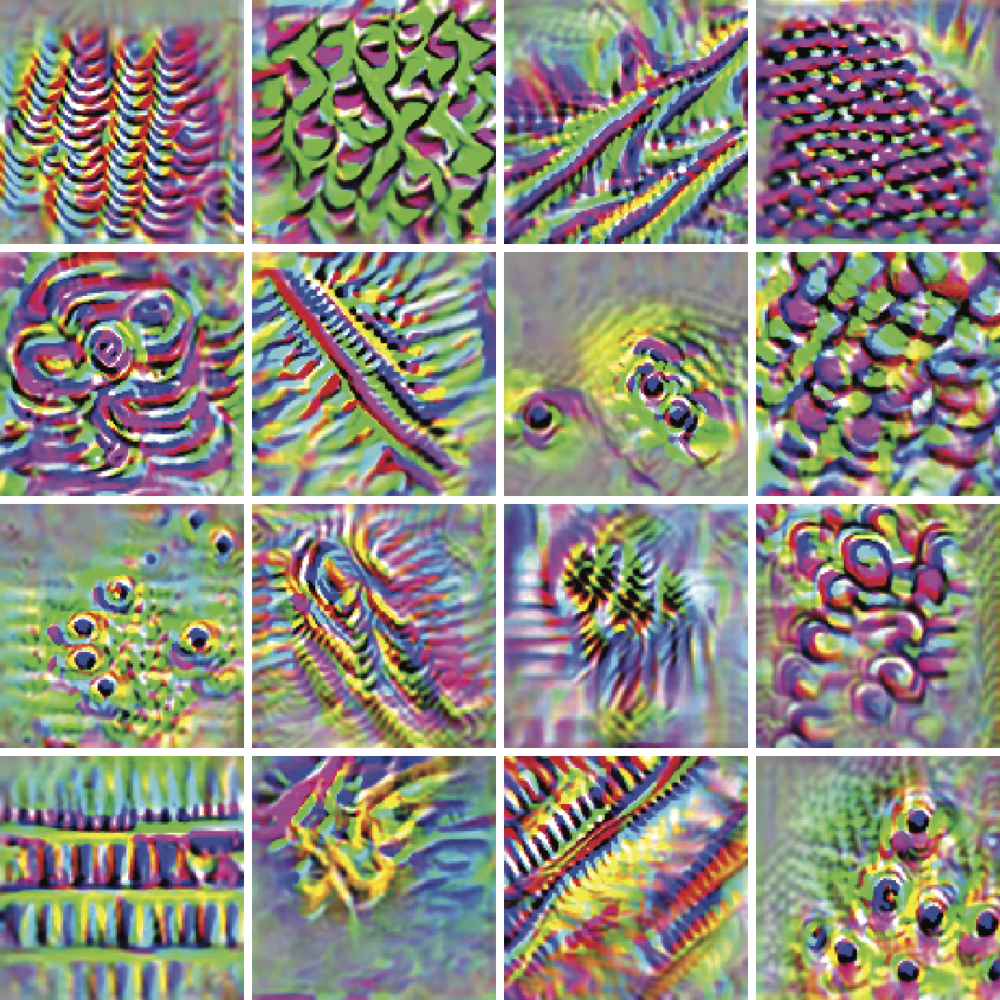

synthesized images to maximize V4 neural responses
Recent news:
-- Yaman Thapa joins as rotation student, 4/2023
-- new pre-print:
"One-to-one mapping between deep network units and real neurons uncovers a visual population code for social behavior." Cowley, Calhoun, Rangarajan, Pillow, Murthy. bioRxiv, 2022. [link]
What are the step-by-step computations of the brain?
We are a computational neuroscience research group led by Prof. Benjamin Cowley at Cold Spring Harbor Laboratory. We develop machine learning techniques and build data-driven deep neural network models to understand how a stimulus is transformed into neural activity and then into behavior. By understanding the brain's computations, we will better treat disease, develop new neurotechnologies, and uncover the foundations of human intelligence.
Our research group focuses on the following directions:
closed-loop methods for systems neuroscience
We are fundamentally limited by the amount of recording time, but our models are data-hungry. We develop closed-loop methods to collect data and train a model in tandem.
explainable models for computational neuroscience
Today's highly-predictive models---deep neural networks---comprise millions of parameters which essentially hide their inner workings. We build models that are both highly-predictive and explainable; we then analyze the inner workings of these models to hypothesize about the internal computations of the brain.
modeling perturbations of neurons
One of the best tools we have to understand the brain is our ability to causally perturb its neurons, either genetically or via stimulation. However, it is difficult to understand the subtle changes in behavior across perturbations of different neurons and neuron types. We develop machine learning methods to unify different perturbations into a single explainable model.